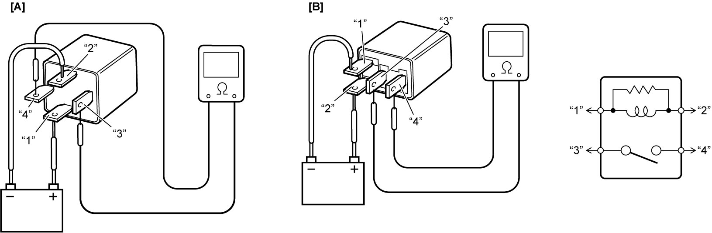
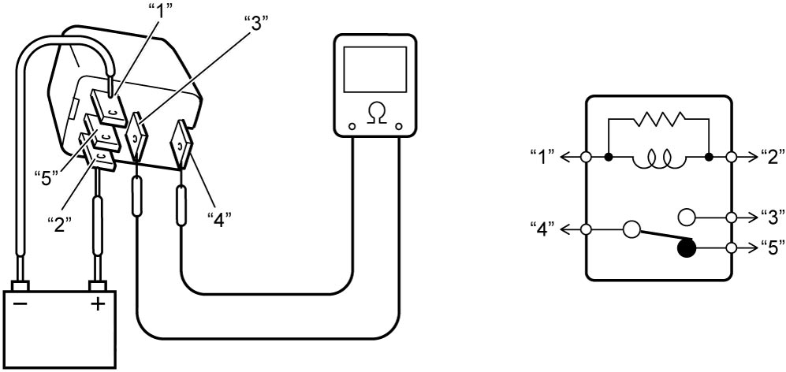

10B
| Control Relay Inspection |
Other than Radiator Cooling Fan Relay No.2 (K14C Model and D16AA Model), Brake Light Relay, Windshield Wiper HI/LO Relay and Windshield Wiper Relay
1)Disconnect relay(s) to be checked. 
2)Check that there is no continuity between terminals “3” and “4”.
If there is faulty condition, replace relay.
If there is faulty condition, replace relay.
3)Measure resistance between terminals “1” and “2” of relay.
If check result is not as specified, replace relay.
If check result is not as specified, replace relay.
Relay resistance between terminals “1” and “2”
Main relay (K14C model and D16AA model) and fuel heater relay: Approx. 75 Ω at 20 °C (68 °F)
Additional heater relay: Approx. 120 Ω at 20 °C (68 °F)
Other than above relay: Approx. 170 Ω at 20 °C (68 °F)
4)Connect battery positive (+) terminal and negative (–) terminal to relay as shown in figure, and check for continuity between terminals “3” and “4”.
If there is no continuity when relay is connected to the battery, replace relay.

If there is no continuity when relay is connected to the battery, replace relay.

 "Expand image")
| [A]: | Main relay (K14C model and D16AA model), fuel heater relay and IG2 relay | [B]: | Other than main relay (K14C model and D16AA model), fuel heater relay and IG2 relay |
Radiator Cooling Fan Relay No.2 (K14C Model and D16AA Model), Brake Light Relay, Windshield Wiper HI/LO Relay and Windshield Wiper Relay
1)Disconnect relay(s) to be checked.
2)Check that there is no continuity between terminals “3” and “4”.
If there is faulty condition, replace relay.
If there is faulty condition, replace relay.
3)Check that there is continuity between terminals “4” and “5”.
If there is faulty condition, replace relay.
If there is faulty condition, replace relay.
4)Measure resistance between terminals “1” and “2” of relay.
If check result is not as specified, replace relay.
If check result is not as specified, replace relay.
Relay resistance
Between terminals “1” and “2”: Approx. 110 Ω at 20 °C (68 °F)
5)Connect battery positive (+) terminal and negative (–) terminal to relay as shown in figure, and check for continuity between terminals “3” and “4”.
If there is no continuity when relay is connected to the battery, replace relay.
If there is no continuity when relay is connected to the battery, replace relay.
6)Connect battery positive (+) terminal and negative (–) terminal to relay as shown in figure, and check for no continuity between terminals “4” and “5”.
If there is continuity when relay is connected to the battery, replace relay.
If there is continuity when relay is connected to the battery, replace relay.

 "Expand image")